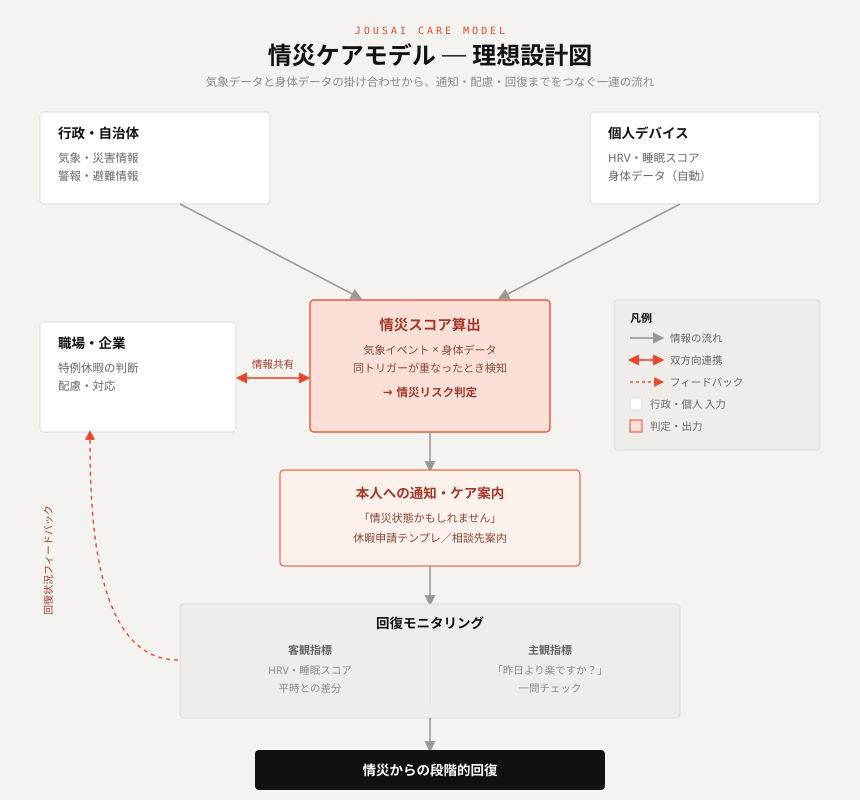

ケア提案
はじめに
前回、「情災（じょうさい）」という概念を提案した。
物理的な被害が小さくても、災害によって感情・心理面で被災する状態のことだ。家が流されたわけでも、怪我をしたわけでもない。それでも眠れない。不安が消えない。そして翌朝、「動けるなら来るべき」という空気の中で出勤する。
そして、自分自身が情災を経験した当事者として、言葉にすること、立ち位置を見ることで少し楽になれた気がした。
同時に、書いた後に残ったのは別の問いと責任だった。
「情災」に名前をつけた。では、社会は何をすればいいのか？
今回はその続きを考えたい。
ふりかえり
前回の記事で整理したことを、簡単に振り返っておく。
災害後の心理的回復モデル（林春男, 2003）は、大規模災害を前提に設計されている。「非日常が続く」ことを前提としたフェーズモデルだ。
でも「小さな被災」の場合、そのモデルは当てはまらない。
このギャップが、情災の核心だ。そしてこのギャップを指す言葉が、今の社会にはない。
だから声を上げられない。だから「大げさ」で終わる。だから少し休むだけで回復するはずの傷が深くなる。
そんな構造を前回明らかにした。
では、何が必要なのか
当事者の一人としてケア手法を考えると、必要なケアは大きく3つの層に整理できる。
① 理解してくれる存在
「大したことないでしょ」ではなく、「それは情災かもしれないね」と言える人がいること。それは人でも、制度でも、ツールでもいい。
まず「あなたの状態は、おかしくない」と伝えてくれる存在が必要だ。
② 特例の休み及びその制度
「証明できないと休めない」という構造を変える必要がある。気象警報が出た翌日は、申請不要で休める、歩みを止められる、確認が心理的にも入る。そういう文化・制度があるだけで、どれだけ違うだろう。
動ける状態でも、動かなくていい選択肢がある社会になることもまた理想なのではないか。
③ 段階的な日常復帰
いきなり「通常モード」に戻すのではなく、フェーズを踏む仕組みが必要だ。
「今日は半日でいい」「今週は定時で帰っていい」そういう小さな調整が出来る環境が、情災からの回復を支える。
今できること、10年後にできること
今できること（事前設計型）
情災への対応は、「しんどくなってから考える」では難しい。
- 気象警報が出たら自動的に選択肢が生まれる仕組み
- 「被害がなくても休んでいい」という文化を平時から作る
- 上司や同僚が「大丈夫だった？今日休む？」と先に声をかける文化
どれも、今すぐできることだろう。
未来のケアモデル（他者検知型）
上記のできることは他者を巻き込む。他者は私たちの言う通りに動くわけがないからこそ、より高度な未来のモデルが必要だ。
すなわち、身体データや普段の心身データ取得が社会の当たり前になったとき、もう一段先のケアが可能になる。
大事なのは、本人が声を上げなくていい設計であることだ。情災の難しさは、しんどい状態のときこそ、助けを求めるのが難しいところにある。だから、「誰かが≒自身を観察している存在が、先に気づく」仕組みが必要になる。
情災ケアモデル図

行政・自治体からの気象情報と、個人デバイスの身体データが掛け合わさることで情災スコアが算出される。スコアは本人への通知・ケア案内に使われると同時に、職場・行政へリアルタイムでフィードバックされる。回復状況も双方向で共有され、段階的な日常復帰を支援する。
「情災チェック」という小さな第一歩
理想モデルはまだ、遠い。技術的にも多くの努力が完成には必要だろう。
でも今すぐできることがある。
気象警報が出ているとき、自分の状態を3問でセルフチェックできるツールを作った。
たったこれだけだ。でも、「自分は今、情災状態かもしれない」と気づくだけで、少しだけ自分を大切にできるかもしれない。少しだけ、休む勇気が持てるかもしれない。
ツールはこちらから体験出来るので、もし気になったら体験してみてほしい。お住いの都道府県と3つの質問に答えるだけだ。
情災チェックを使ってみる →社会の何かを批判する時は、提案が必要だ。モデルが必要だ。理想が必要だ。
今回の投稿は、その責任を果たす投稿であろう。このモデルはきっと不完全だし、改善の余地がある。上司や周りが支えてくれている会社自体、もしかしたら情災支援をモデルにする必要もないかもしれない。企業にいる人間は必要だからこそいると考えると、これもまたジレンマである。
そして、これを読んだ君がまた議論するとき、君もまたモデルの提案をしてくれるよう、私は強く望んでいる。
P.S：前回の投稿でリアクションしてくれたすべての人に感謝を届けたい。どのリアクションも大事なことだと思う。ありがとう。
- 第1回：「情災（じょうさい）」という概念を提案したい
- 林春男（2003）『いのちを守る地震防災学』岩波書店
- Disaster Invisibility Framework（2024, ScienceDirect）
- 心理的回復フェーズモデル（厚生労働省・各都道府県ガイドライン）
「情災」という言葉に共感した方、同じ経験をした方の声を聞かせてください。